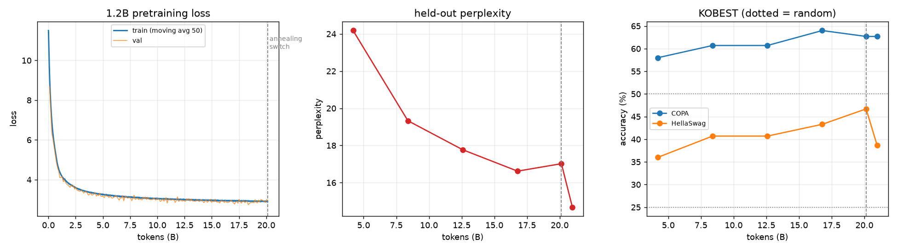

한국어 1.2B LLM을
밑바닥부터 학습했습니다
토크나이저부터 직접 만들어 한국어 1.2B 대화 모델을 완성한 기록입니다.
transformers 없이 순수 PyTorch로 구현했고, GPU 한 장(RTX 6000 Ada 48GB)에서
25.2B 토큰을 학습한 뒤 SFT까지 마쳤습니다.
01 모델 스펙
| 모델 | decoder-only 1.2B (dim 2048 / 24층 / GQA 16:4 / ctx 2048) |
| 토크나이저 | byte-level BPE 64K, 한국어 코퍼스로 직접 학습 |
| 사전학습 | 25.2B 토큰 (24,000 step, RTX 6000 Ada ×1, 약 6주) |
| 정렬 | SFT (KoAlpaca + KULLM v2, 2 epoch) |
| 최종 체크포인트 | checkpoints/sft_1b/latest.pt |

02 결과 요약
사전학습 — 1.2B vs 같은 코드로 학습한 125M
| 125M (2.6B 토큰) | 1.2B (25.2B 토큰) | 무작위 | |
|---|---|---|---|
| held-out perplexity | 34.0 | 13.87 | — |
| KOBEST COPA | 48.3% | 67.1% | 50% |
| KOBEST HellaSwag | 28.3% | 40.0% | 25% |
| KOBEST BoolQ | 49.3% | 50.0% | 50% |
SFT 후 — 학습 데이터와 겹치지 않는 자체 문항 36개 + KOBEST 전체
| 대화 정답률 | 스스로 멈춤 | 반복 루프 | COPA | HellaSwag | |
|---|---|---|---|---|---|
| 베이스 | 71.0% | 92% | 11% | 67.1% | 40.0% |
| SFT 에폭0 | 67.7% | 100% | 3% | 66.9% | 40.8% |
| SFT 최종 | 74.2% | 97% | 8% | 66.4% | 40.8% |
유형별로는 사실 100%, 지시 50%, 계산 0%입니다. 자세한 수치와 해석은 결과 상세, 모델별 답변 전문은 sft_eval_answers.md에 있습니다.
03 무엇을 직접 만들었나
datasets(코퍼스 다운로드)와 PyTorch(행렬 연산·자동미분)를 빼면 전부 이 저장소 안에 있습니다.
-
BPE 토크나이저
증분 쌍 빈도 갱신 + inverted index + lazy-deletion heap으로 500MB 코퍼스에서 64K vocab을 18.6분에 학습
—
tokenizer/bpe.py -
트랜스포머
RMSNorm · RoPE · GQA · QK-Norm · SwiGLU · embedding tying. 교육용 명시적 attention과 FlashAttention 경로를 모두 두고 단위테스트로 일치 검증
—
model.py -
청크 cross-entropy
64K vocab에서 logits만 8.6GB가 되는 문제를 gradient checkpointing으로 해결
—
model.py의chunked_cross_entropy -
데이터 파이프라인
스트리밍 다운로드 → 품질 필터 → MinHash 중복제거 → 토크나이즈 → shard
—
data/ -
품질 분류기
위키·교과서를 positive, 원본 웹을 negative로 학습한 해시 특징 로지스틱 회귀(numpy 직접 구현), held-out 정확도 98.3%
—
data/quality.py -
학습 루프
WSD 스케줄, bf16, torch.compile, gradient accumulation, 원자적 체크포인트, 완전 재개
—
train.py -
평가
perplexity, KOBEST(비조건부 정규화 + 예측 쏠림 감지), 오염 검사
—
eval.py,evals/
04 하드웨어와 비용
RTX 6000 Ada 48GB 한 장으로 전부 했습니다. 벤치마크로 고른 설정은 마이크로배치 2 × 2048토큰(26GB)이며, 처리량은 11K tok/s였습니다.
배치를 4로 키우면 34.7K tok/s가 나왔지만 VRAM이 34.7GB로 늘어, 같은 GPU를 쓰는 다른 작업(vLLM 등)이 뜰 때마다 OOM으로 죽었습니다. 공유 자원에서는 최적값보다 완주 가능성이 중요하다는 판단으로 배치 2를 택했고, 결과적으로 실제 처리량도 더 좋았습니다.
05 한계
- 계산 불가 — 12+7을 14라고 답합니다. 이 규모·데이터로는 개선되지 않습니다.
- 드문 사실은 지어냅니다 — 산 높이, 화학식 같은 수치는 매번 다르게 답합니다.
- BoolQ 실패 — 전 구간에서 예측이 한쪽으로 쏠려 무작위 수준입니다.
- annealing의 부작용 — 고품질 데이터 전환으로 perplexity는 26% 좋아졌지만 HellaSwag은 46.2% → 40.0%로 떨어졌습니다.
- SFT 데이터 오염 — annealing에 SFT와 같은 데이터를 넣어 검증 loss가 일반화가 아니라 기억을 재고 있었습니다. 그래서 별도 문항을 만들어 평가했습니다.
자세한 내용과 과정에서 배운 것은 결과 상세에 정리했습니다.
06 직접 재현하기
python3.13 -m venv .venv && source .venv/bin/activate pip install -r requirements.txt # 구현 검증 (GPU 불필요, 1분) python -m tokenizer.test_bpe python test_model.py # 사전학습 (RTX 6000 Ada 1장 기준 약 6주) ./run_training.sh base_1b data/shards_26b # SFT + 대화 python sft.py --base checkpoints/base_1b/latest.pt --config sft_1b python sample.py --ckpt checkpoints/sft_1b/latest.pt --chat
전체 절차는 README, 운영·재개·모니터링은 OPERATIONS.md에 있습니다.